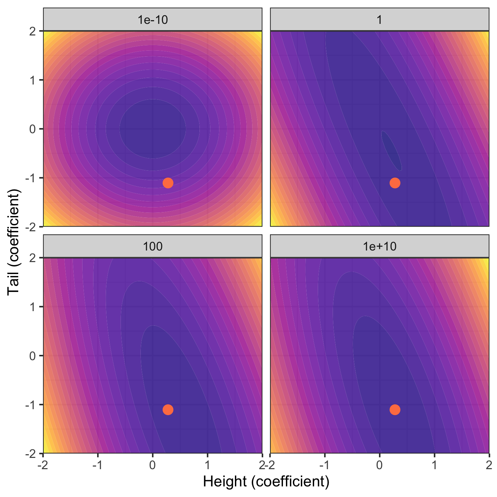
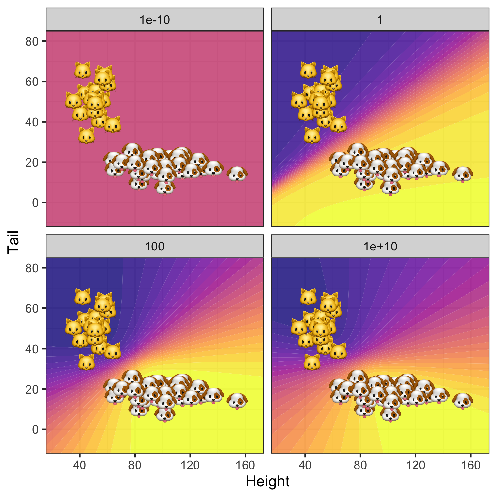

Bayesian Logistic Regression
From scratch in Julia Language
bayes
logistic regression
Julia
An introduction to Bayesian Logistic Regression from the bottom up with examples in Julia language.
Uncertainty

If you’ve ever searched for evaluation metrics to assess model accuracy, chances are that you found many different options to choose from (too many?). Accuracy is in some sense the holy grail of prediction so it’s not at all surprising that the machine learning community spends a lot time thinking about it. In a world where more and more high-stake decisions are being automated, model accuracy is in fact a very valid concern.
But does this recipe for model evaluation seem like a sound and complete approach to automated decision-making? Haven’t we forgot anything? Some would argue that we need to pay more attention to model uncertainty. No matter how many times you have cross-validated your model, the loss metric that it is being optimized against as well as its parameters and predictions remain inherently random variables. Focusing merely on prediction accuracy and ignoring uncertainty altogether can install a false level of confidence in automated decision-making systems. Any trustworthy approach to learning from data should therefore at the very least be transparent about its own uncertainty.
How can we estimate uncertainty around model parameters and predictions? Frequentist methods for uncertainty quantification generally involve either closed-form solutions based on asymptotic theory or bootstrapping (see for example here for the case of logistic regression). In Bayesian statistics and machine learning we are instead concerned with modelling the posterior distribution over model parameters. This approach to uncertainty quantification is known as Bayesian Inference because we treat model parameters in a Bayesian way: we make assumptions about their distribution based on prior knowledge or beliefs and update these beliefs in light of new evidence. The frequentist approach avoids the need for being explicit about prior beliefs, which in the past has sometimes been considered as unscientific. However, frequentist methods come with their own assumptions and pitfalls (see for example Murphy (2012)) for a discussion). Without diving further into this argument, let us now see how Bayesian Logistic Regression can be implemented from the bottom up.
The ground truth
In this post we will work with a synthetic toy data set \(\mathcal{D}\) composed of \(N\) binary labels \(y_n\in\{0,1\}\) and corresponding feature vectors \(\mathbf{x}_n\in \mathbb{R}^D\). Working with synthetic data has the benefit that we have control over the ground truth that generates our data. In particular, we will assume that the binary labels \(y_n\) are generated by a logistic regression model
\[ \begin{equation} \begin{aligned} && p(y_n|\mathbf{x}_n;\mathbf{w})&\sim\text{Ber}(y_n|\sigma(\mathbf{w}^T\mathbf{x}_n)) \\ \end{aligned} \end{equation} \tag{1}\]
where \(\sigma(a)=1/(1+e^{-a})\) is the sigmoid or logit function (Murphy 2022).1 Features are generated from a mixed Gaussian model.
To add a little bit of life to our example we will assume that the binary labels classify samples into cats and dogs, based on their height and tail length. Figure 1 shows the synthetic data in the two-dimensional feature domain. Following an introduction to Bayesian Logistic Regression in the next section we will use the synthetic data \(\mathcal{D}\) to estimate our model.
The maths
Estimation usually boils down to finding the vector of parameters \(\hat{\mathbf{w}}\) that maximizes the likelihood of observing \(\mathcal{D}\) under the assumed model. That estimate can then be used to compute predictions for some new unlabelled data set \(\mathcal{D}=\{x_m:m=1,...,M\}\).
Problem setup
The starting point for Bayesian Logistic Regression is Bayes’ Theorem:
\[ \begin{equation} \begin{aligned} && p(\mathbf{w}|\mathcal{D})&\propto p(\mathcal{D}|\mathbf{w})p(\mathbf{w}) \\ \end{aligned} \end{equation} \tag{2}\]
Formally, this says that the posterior distribution of parameters \(\mathbf{w}\) is proportional to the product of the likelihood of observing \(\mathcal{D}\) given \(\mathbf{w}\) and the prior density of \(\mathbf{w}\). Applied to our context this can intuitively be understood as follows: our posterior beliefs around \(\mathbf{w}\) are formed by both our prior beliefs and the evidence we observe. Yet another way to look at this is that maximising Equation 2 with respect to \(\mathbf{w}\) corresponds to maximum likelihood estimation regularized by prior beliefs (we will come back to this).
Under the assumption that individual label-feature pairs are independently and identically distributed, their joint likelihood is simply the product over their individual densities. The prior beliefs around \(\mathbf{w}\) are at our discretion. In practice they may be derived from previous experiments. Here we will use a zero-mean spherical Gaussian prior for reasons explained further below. To sum this up we have
\[ \begin{equation} \begin{aligned} && p(\mathcal{D}|\mathbf{w})& \sim \prod_{n=1}^N p(y_n|\mathbf{x}_n;\mathbf{w})\\ && p(\mathbf{w})& \sim \mathcal{N} \left( \mathbf{w} | \mathbf{w}_0, \Sigma_0 \right) \\ \end{aligned} \end{equation} \tag{3}\]
with \(\mathbf{w}_0=\mathbf{0}\) and \(\Sigma_0=\sigma^2\mathbf{I}\). Plugging this into Bayes’ rule we finally have
\[ \begin{aligned} && p(\mathbf{w}|\mathcal{D})&\propto\prod_{n=1}^N \text{Ber}(y_n|\sigma(\mathbf{w}^T\mathbf{x}_n))\mathcal{N} \left( \mathbf{w} | \mathbf{w}_0, \Sigma_0 \right) \\ \end{aligned} \]
Unlike with linear regression there are no closed-form analytical solutions to estimating or maximising this posterior, but fortunately accurate approximations do exist (Murphy 2022). One of the simplest approaches called Laplace Approximation is straight-forward to implement and computationally very efficient. It relies on the observation that under the assumption of a Gaussian prior, the posterior of logistic regression is also approximately Gaussian: in particular, this Gaussian distribution is centered around the maximum a posteriori (MAP) estimate \(\hat{\mathbf{w}}=\arg\max_{\mathbf{w}} p(\mathbf{w}|\mathcal{D})\) with a covariance matrix equal to the inverse Hessian evaluated at the mode \(\hat{\Sigma}=(\mathbf{H}(\hat{\mathbf{w}}))^{-1}\). With that in mind, finding \(\hat{\mathbf{w}}\) seems like a natural next step.
Solving the problem
In practice we do not maximize the posterior \(p(\mathbf{w}|\mathcal{D})\) directly. Instead we minimize the negative log likelihood, which is an equivalent optimization problem and easier to implement. In Equation 4 below I have denoted the negative log likelihood as \(\ell(\mathbf{w})\) indicating that this is the loss function we aim to minimize. The following two lines in Equation 4 show the gradient and Hessian - so the first- and second-order derivatives of \(\ell\) with respect to \(\mathbf{w}\) - where \(\mathbf{H}_0=\Sigma_0^{-1}\) and \(\mu_n=\sigma(\mathbf{w}^T\mathbf{x}_n)\). To understand how exactly the gradient and Hessian are derived see for example chapter 10 in Murphy (2022).2.
\[ \begin{equation} \begin{aligned} && \ell(\mathbf{w})&=- \sum_{n=1}^{N} [y_n \log \mu_n + (1-y_n)\log (1-\mu_n)] + \frac{1}{2} (\mathbf{w}-\mathbf{w}_0)^T\mathbf{H}_0(\mathbf{w}-\mathbf{w}_0) \\ && \nabla_{\mathbf{w}}\ell(\mathbf{w})&= \sum_{n=1}^{N} (\mu_n-y_n) \mathbf{x}_n + \mathbf{H}_0(\mathbf{w}-\mathbf{w}_0) \\ && \nabla^2_{\mathbf{w}}\ell(\mathbf{w})&= \sum_{n=1}^{N} (\mu_n-y_n) \left( \mu_n(1-\mu_n) \mathbf{x}_n \mathbf{x}_n^T \right) + \mathbf{H}_0\\ \end{aligned} \end{equation} \tag{4}\]
SIDENOTE üí°
Note how earlier I mentioned that maximising the posterior likelihood can be seen as regularized maximum likelihood estimation. We can now make that connection explicit: in Equation 4 let us assume that \(\mathbf{w}_0=\mathbf{0}\). Then since \(\mathbf{H}_0=\lambda\mathbf{I}\) with \(1/\sigma^2\) the second term in the first line is simply \(\lambda \frac{1}{2} \mathbf{w}^T\mathbf{w}=\lambda \frac{1}{2} ||\mathbf{w}||_2^2\). This is equivalent to running logistic regression with an \(\ell_2\)-penalty (Bishop 2006).
Since minimizing the loss function in Equation 4 is a convex optimization problem we have many efficient algorithms to choose from in order to solve this problem. With the Hessian at hand it seems natural to use a second-order method, because incorporating information about the curvature of the loss function generally leads to faster convergence. Here we will implement Newton’s method in line with the presentation in chapter 8 of Murphy (2022).
Posterior predictive
Suppose now that we have trained the Bayesian Logistic Regression model as our binary classifier \(g_N(\mathbf{x})\) using our training data \(\mathcal{D}\). A new unlabelled sample \((\mathbf{x}_{N+1},?)\) arrives. As with any binary classifier we can predict the missing label by simply plugging the new sample into our classifier \(\hat{y}_{N+1}=g_N(\mathbf{x}_{N+1})=\sigma(\hat{\mathbf{w}}^T\mathbf{x}_{N+1})\), where \(\hat{\mathbf{w}}\) is the MAP estimate as before. If at training phase we have found \(g_N(\mathbf{x})\) to achieve good accuracy, we may expect \((\mathbf{x}_{N+1},\hat{y}_{N+1})\) to be a reasonably good approximation of the true and unobserved pair \((\mathbf{x}_{N+1},y_{N+1})\). But since we are still dealing with an expected value of a random variable, we would generally like to have an idea of how noisy this prediction is.
Formally, we are interested in the posterior predictive distribution:
\[ \begin{equation} \begin{aligned} && p(y=1|\mathbf{x}, \mathcal{D})&= \int \sigma(\mathbf{w}^T \mathbf{x})p(\mathbf{w}|\mathcal{D})d\mathbf{w} \\ \end{aligned} \end{equation} \tag{5}\]
SIDENOTE üí°
The approach that ignores uncertainty altogether corresponds to what is referred to as plugin approximation of the posterior predictive. Formally, it imposes \(p(y=1|\mathbf{x}, \mathcal{D})\approx p(y=1|\mathbf{x}, \hat{\mathbf{w}})\).
With the posterior distribution over model parameters \(p(\mathbf{w}|\mathcal{D})\) at hand we have the necessary ingredients to estimate the posterior predictive distribution \(p(y=1|\mathbf{x}, \mathcal{D})\).
An obvious, but computationally expensive way to estimate it is through Monte Carlo: draw \(\mathbf{w}_s\) from \(p(\mathbf{w}|\mathcal{D})\) for \(s=1:S\) and compute fitted values \(\sigma(\mathbf{w_s}^T\mathbf{x})\) each. Then the posterior predictive distribution corresponds to the average over all fitted values, \(p(y=1|\mathbf{x}, \mathcal{D})=1/S \sum_{s=1}^{S}\sigma(\mathbf{w_s}^T\mathbf{x})\). By the law of large numbers the Monte Carlo estimate is an accurate estimate of the true posterior predictive for large enough \(S\). Of course, “large enough” is somewhat loosely defined here and depending on the problem can mean “very large”. Consequently, the computational costs involved essentially know no upper bound.
Fortunately, it turns out that we can trade off a little bit of accuracy in return for a convenient analytical solution. In particular, we have that \(\sigma(a) \approx \Phi(\lambda a)\) where \(\Phi(.)\) is the standard Gaussian cdf and \(\lambda=\pi/8\) ensures that the two functions have the same slope at the origin (Figure 2). Without dwelling further on the details we can use this finding to approximate the integral in Equation 5 as a sigmoid function. This is called probit approximation and implemented below.

The code
We now have all the necessary ingredients to code Bayesian Logistic Regression up from scratch. While in practice we would usually want to rely on existing packages that have been properly tested, I often find it very educative and rewarding to program algorithms from the bottom up. You will see that Julia’s syntax so closely resembles the mathematical formulas we have seen above, that going from maths to code is incredibly easy. Seeing those formulas and algorithms then actually doing their magic is quite fun! The code chunk below, for example, shows the implementation of the loss function and its derivatives from Equation 4 above. Take a moment to go through the code line-by-line and try to understand how it relates back to the equations in Equation 4. Isn’t it amazing how closely the code resembles the actual equations?
Aside from the optimization routine this is essentially all there is to coding up Bayesian Logistic Regression from scratch in Julia Language. If you are curious to see the full source code in detail you can check out this interactive notebook. Now let us finally turn back to our synthetic data and see how Bayesian Logistic Regression can help us understand the uncertainty around our model predictions.
DISCLAIMER ❗️
I should mention that this is the first time I program in Julia, so for any Julia pros out there: please bear with me! Happy to hear your suggestions/comments.
The estimates
Figure 3 below shows the resulting posterior distribution for \(w_2\) and \(w_3\) at varying degrees of prior uncertainty \(\sigma\). The constant \(w_1\) is held constant at the mode (\(\hat{w}_1\)). The red dot indicates the MLE. Note how for the choice of \(\sigma\rightarrow 0\) the posterior is equal to the prior. This is intuitive since we have imposed that we have no uncertainty around our prior beliefs and hence no amount of new evidence can move us in any direction. Conversely, for \(\sigma \rightarrow \infty\) the posterior distribution is centered around the unconstrained MLE: prior knowledge is very uncertain and hence the posterior is dominated by the likelihood of the data.

What about the posterior predictive? The story is similar: since for \(\sigma\rightarrow 0\) the posterior is completely dominated by the zero-mean prior we have \(p(y=1|\mathbf{x},\hat{\mathbf{w}})=0.5\) everywhere (top left panel in Figure 4. As we gradually increase uncertainty around our prior the predictive posterior depends more and more on the data \(\mathcal{D}\): uncertainty around predicted labels is high only in regions that are not populated by samples \((y_n, \mathbf{x}_n)\). Not surprisingly, this effect is strongest for the MLE (\(\sigma\rightarrow \infty\)) where we see some evidence of overfitting.

Wrapping up
In this post we have seen how Bayesian Logistic Regression can be implemented from scratch in Julia language. The estimated posterior distribution over model parameters can be used to quantify uncertainty around coefficients and model predictions. I have argued that it is important to be transparent about model uncertainty to avoid being overly confident in estimates.
There are many more benefits associated with Bayesian (probabilistic) machine learning. Understanding where in the input domain our model exerts high uncertainty can for example be instrumental in labelling data: see for example Gal, Islam, and Ghahramani (2017) and follow-up works for an interesting application to active learning for image data. Similarly, there is a recent work that uses estimates of the posterior predictive in the context of algorithmic recourse (Schut et al. 2021). For a brief introduction to algorithmic recourse see one of my previous posts.
As a great reference for further reading about probabilistic machine learning I can highly recommend Murphy (2022). An electronic version of the book is currently freely available as a draft. Finally, remember that if you want to try yourself at the code, you can check out this interactive notebook.
References
Bishop, Christopher M. 2006. Pattern Recognition and Machine Learning. springer.
Gal, Yarin, Riashat Islam, and Zoubin Ghahramani. 2017. “Deep Bayesian Active Learning with Image Data.” In International Conference on Machine Learning, 1183–92. PMLR.
Murphy, Kevin P. 2012. Machine Learning: A Probabilistic Perspective. MIT press.
———. 2022. Probabilistic Machine Learning: An Introduction. MIT Press.
Schut, Lisa, Oscar Key, Rory Mc Grath, Luca Costabello, Bogdan Sacaleanu, Yarin Gal, et al. 2021. “Generating Interpretable Counterfactual Explanations By Implicit Minimisation of Epistemic and Aleatoric Uncertainties.” In International Conference on Artificial Intelligence and Statistics, 1756–64. PMLR.
Footnotes
Citation
BibTeX citation:
@online{altmeyer2021,
author = {Altmeyer, Patrick},
title = {Bayesian {Logistic} {Regression}},
date = {2021-11-15},
url = {https://www.paltmeyer.com/blog//blog/posts/bayesian-logit},
langid = {en}
}
For attribution, please cite this work as:
Altmeyer, Patrick. 2021. “Bayesian Logistic Regression.”
November 15, 2021. https://www.paltmeyer.com/blog//blog/posts/bayesian-logit.